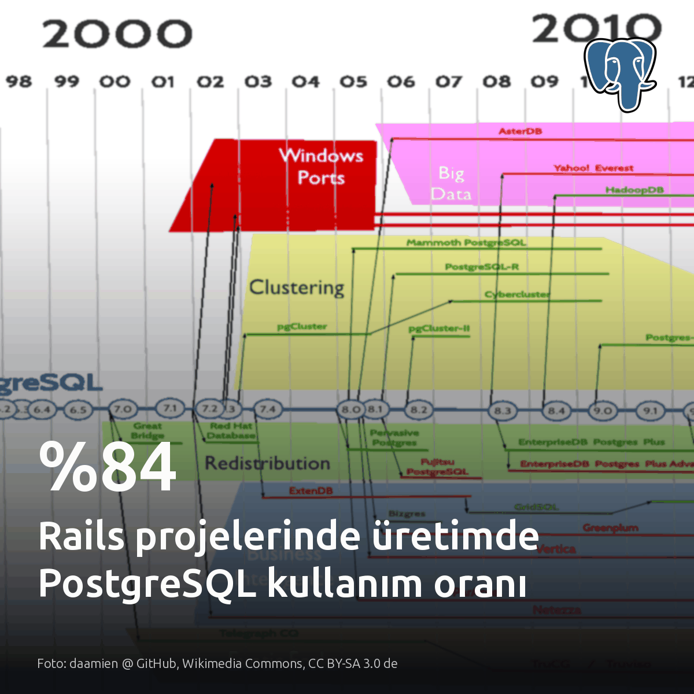
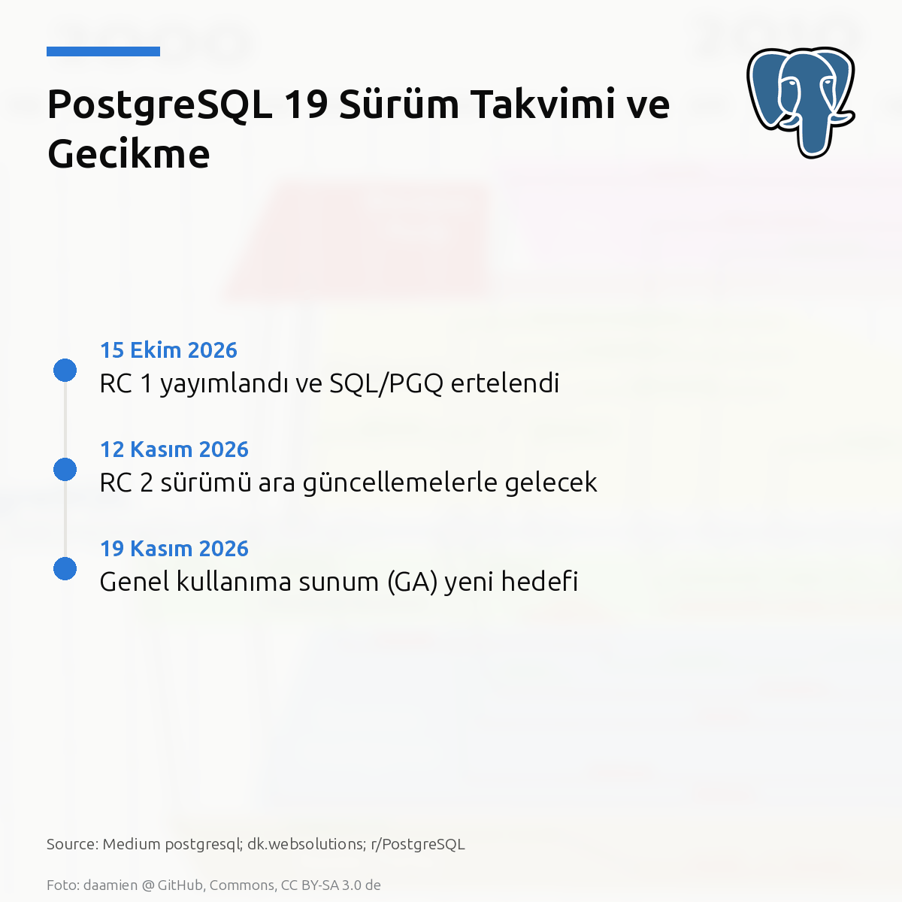
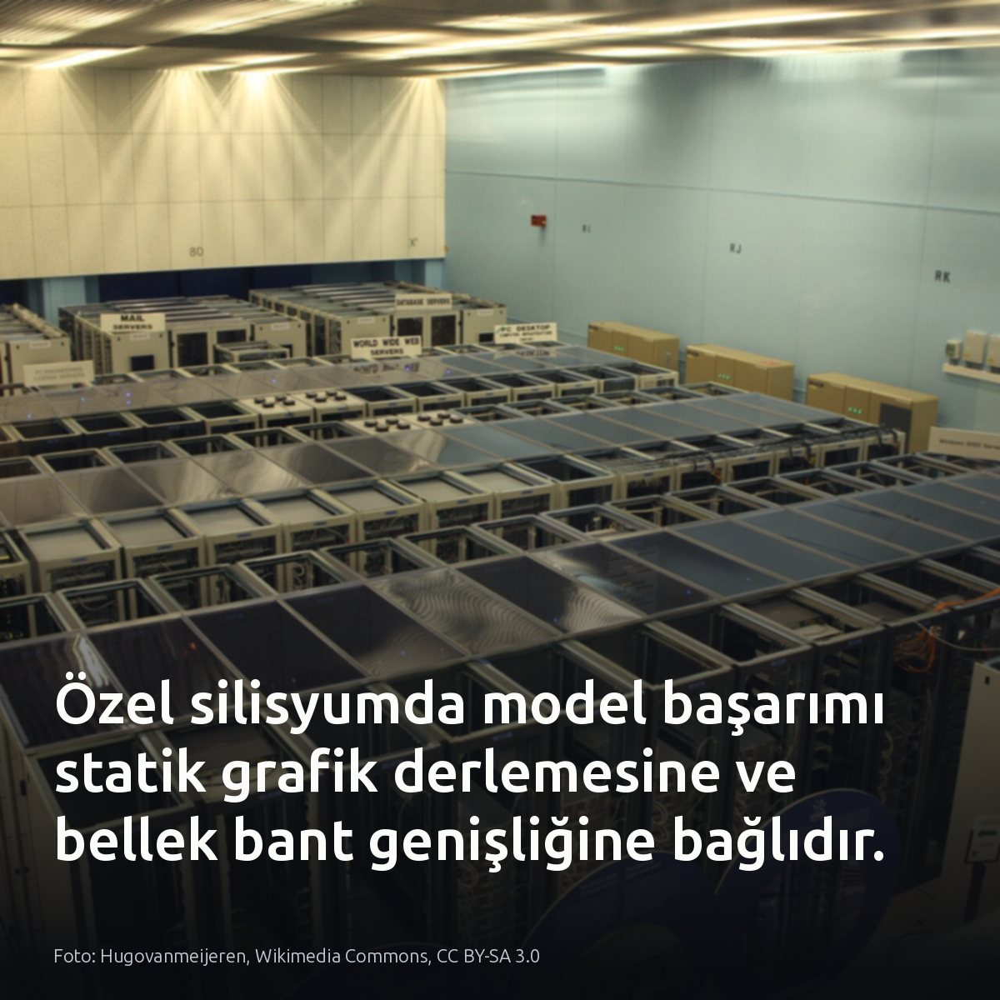
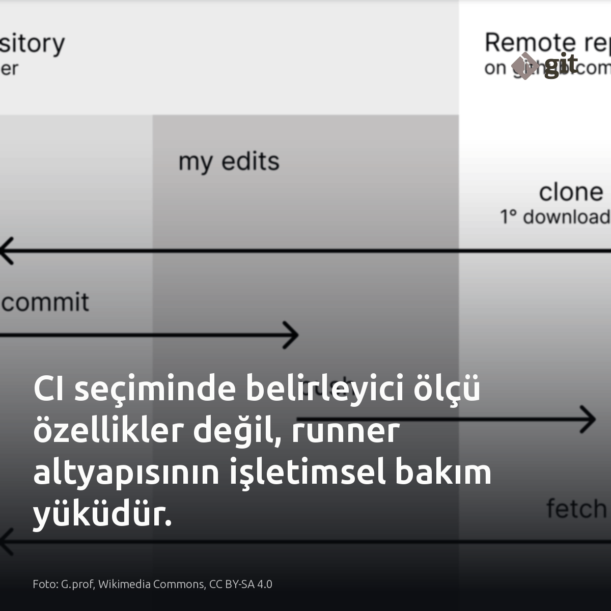

Metni kopyala, kartı indir, LinkedIn'de yapıştır. Bağlantılar gönderiye değil ilk yoruma.

Rails projelerinin %84'ü üretimde PostgreSQL üzerinde çalışıyor. En yakın rakip MySQL %23 seviyesinde kaldı. Veritabanı bağımsızlığı fiilen bitti. Active Record artık soyut bir SQL motoruna değil, doğrudan PostgreSQL veri tiplerine yaslanıyor. Bu durum, şema risklerini ve gizli ORM yükünü veritabanı düğümünde denetlemeyi zorunlu kılıyor. #postgresql #rubyonrails #dbaKartı indir
Kaynak ve anket detayları: - Görsel kaynağı: Planet PostgreSQL (https://postgr.es/p/9yH) - [S2], [S3]: Andrew Atkinson, 2026 Ruby on Rails Community Survey (https://postgr.es/p/9yH)
PostgreSQL 19'da paralel autovacuum 4 çalışan başlatsa da temizlik süresi kısalmıyor. Seri modda 1,31 saniye süren işlem, paralel çalışanlar devreye girmesine rağmen disk I/O darboğazı yüzünden ancak 1,25 saniyeye inebiliyor. Autovacuum heap taramasını paralelleştirmiyor. Paylaşılan maliyet tavanı bölündüğünden, disk kuyruk gecikmesini izleyip autovacuum_vacuum_cost_limit değerini çalışan sayısına göre ayarlamak gerekiyor. Bu kısıt, I/O darboğazı bulunmayan ve tabloları bellekte tutan çok indeksli sistemlerde geçerli değildir. #postgresql #dba #autovacuumKartı indir
Kaynaklar ve test verileri: Görsel: Dmitry Grigoriev, Wikimedia Commons, CC BY 3.0 [S1]-[S6] Alex Georgiev: https://dev.to/alexgeorgiev17/postgresql-19-betas-parallel-autovacuum-launches-workers-but-leaves-vacuum-time-unchanged-3g4j

Yapay zekâ kod incelemesinin teslimatı hızlandırdığı tezi, PostgreSQL 19 sürümünü 19 Kasım'a erteletti. Otomatik denetleyiciler tek bir özellik için dakikalar içinde 40 olası hata üretebiliyor. Asıl darboğaz çözüme kaydı. Doğrulama yükü insan kapasitesini aşınca 8 ila 10 ana özellik PostgreSQL 20'ye ertelendi. Hata bulmayı otomatikleştirmek, ayıklama kapasitesi artmadıkça teslimatı hızlandırmıyor; sadece takvimi kilitliyor. #postgresql #database #devopsKartı indir
Kaynaklar ve detaylar: Kart kaynağı: Medium postgresql; dk.websolutions; r/PostgreSQL - [S1, S3, S4, S5, S6, S7] dk.websolutions: https://dkwebsolutions.medium.com/postgres-19-slips-after-ai-reviewers-flood-it-with-bugs-what-it-means-for-developers-0b809c42520e?source=rss------postgresql-5 - [S2] r/PostgreSQL: https://www.reddit.com/r/PostgreSQL/comments/1x8ernf/pg_19_ga_moved_to_nov_19_rc_2_on_nov_12_anyone/

501B parametreli Beam modelinde token başına düşen 23B parametre, Trainium üzerinde GPU'dan farklı davranıyor. Fark derleme mimarisinde yatıyor. Model her token için yalnızca 8 uzmanı devreye sokuyor. Genel amaçlı grafik işlemciler çalışma anında dinamik bellek tahsis ederken, özel silisyum katı bir statik grafik derleyicisiyle tensör çekirdeklerini önceden kilitliyor. Ağırlıklar çip üzerindeki yüksek bant genişlikli belleğe doğrudan eşlendiğinde ara aktarım gecikmesi sıfırlanıyor. Ancak statik derleme, değişen girdi uzunlukları için önceden tanımlanmış sabit matris bloklarına zorunlu dolgu yapılmasını şart koşuyor. Değişken yük altında çalışan çıkarım servislerinde bu dolgu maliyeti, gerçek işlem hacmini teorik hesaplama tavanının belirgin biçimde altında bırakıyor. #trainium #llmops #machinelearningKartı indir
Kaynaklar ve detaylar: Görsel: Hugovanmeijeren, Wikimedia Commons, CC BY-SA 3.0 [S1] https://aws.amazon.com/about-aws/whats-new/2026/01/reflection-beam-on-sagemaker-jumpstart-and-aws-trainium/ [S2] https://aws.amazon.com/about-aws/whats-new/2026/01/reflection-beam-on-sagemaker-jumpstart-and-aws-trainium/ [S3] https://huggingface.co/blog/reflection-beam [S6] https://huggingface.co/blog/reflection-beam

En yaygın 3 CI platformunda asıl maliyet arayüz değil, runner sunucularının haftalık bakım mesaisidir. Fark işletimde netleşiyor. Yama ve kapasite yükünü sıfırlamak isteyen dağıtık ekipler için yönetilen SaaS runner modeli idealdir. Veritabanı testlerinde yüksek disk I/O ve yerel ağ erişimi gerekiyorsa kurum içi Jenkins sunucuları zorunluluktur. Karar vermeden önce son ayda runner bakımına harcanan mühendislik saatine bakın. #devops #cicd #platformengineeringKartı indir
Kaynaklar: - Görsel: G.prof, Wikimedia Commons, CC BY-SA 4.0 - [S1] GitHub Actions vs GitLab CI vs Jenkins: Full Comparison 2026: https://medium.com/devops-ai-decoded/github-actions-vs-gitlab-ci-vs-jenkins-full-comparison-2026-fdf1162deadc?source=rss------devops-5